🚀 Creating a .NET Project for Prometheus Remote Write Between OpenShift Clusters 🌍
In this blog post, I'll guide you through setting up a .NET project to demonstrate how to send Prometheus metrics using Remote Write between OpenShift clusters, while also representing relationships similar to Thanos in Prometheus architecture. Whether you're looking to improve your monitoring or just streamline metric management, this is for you!
🎯 Goal
💡 What I want to achieve: I want to create a .NET project that shows relationships (like Thanos in Prometheus) and implement remote write for Prometheus metrics to move data between OpenShift clusters.
🛠️ Prerequisites
Before starting, make sure you have:
-
🖥️ A working OpenShift cluster (or use CRC, CodeReady Containers for local development)
-
🧑💻 .NET SDK installed (Download here)
-
🛠️ Prometheus installed on your clusters
📝 Step-by-Step Guide
1. Create a New .NET Project
start location and environment
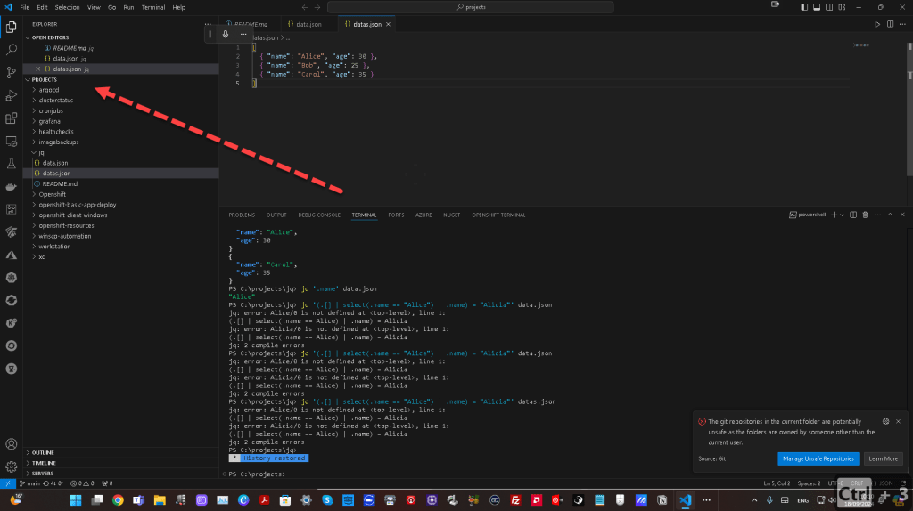
First, create a new .NET console project using the following command:
dotnet new console -n PrometheusRemoteWrite
cd PrometheusRemoteWrite
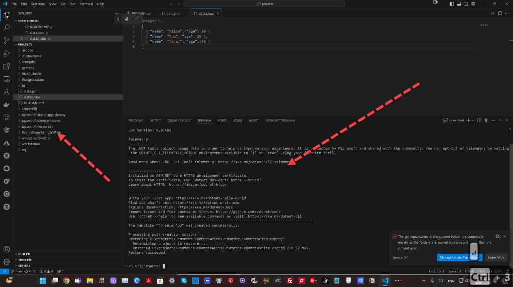
🔧 This will set up the basic structure for our project. We will focus on setting up an API to send metrics to Prometheus from one OpenShift cluster to another.
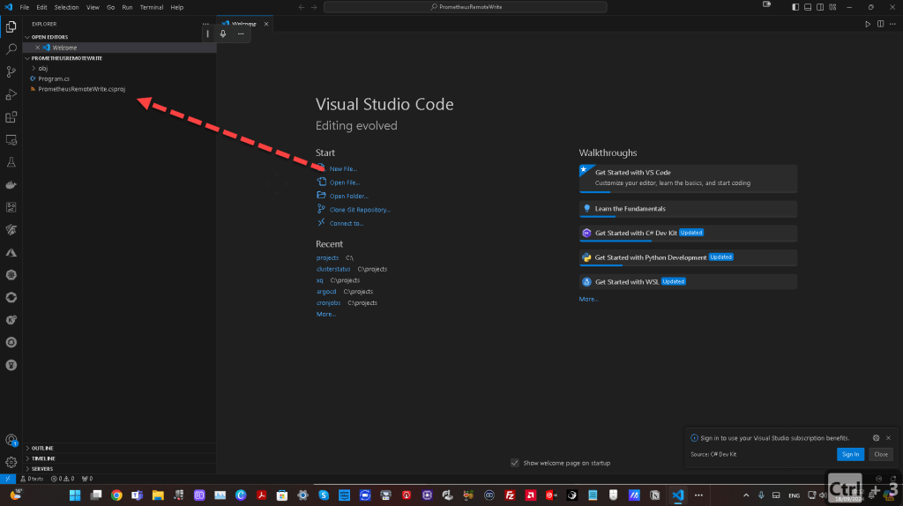
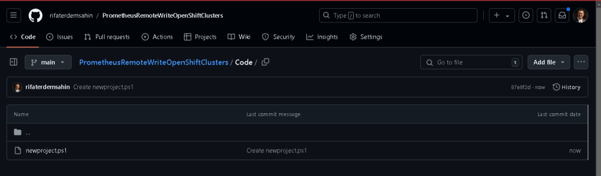
Toolkit Login
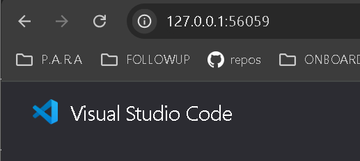
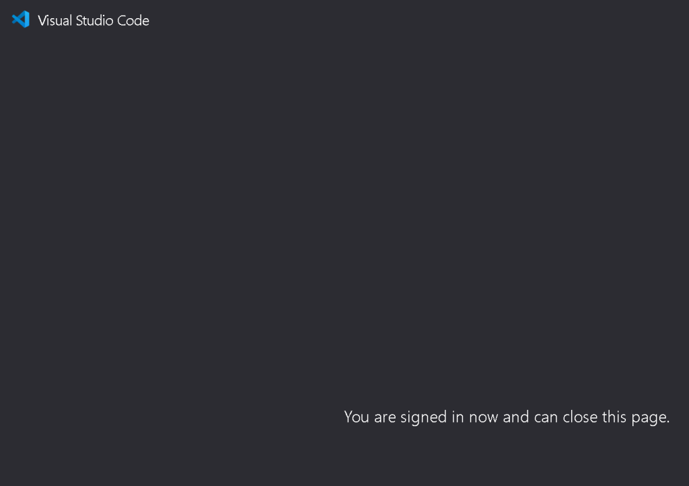
run and see
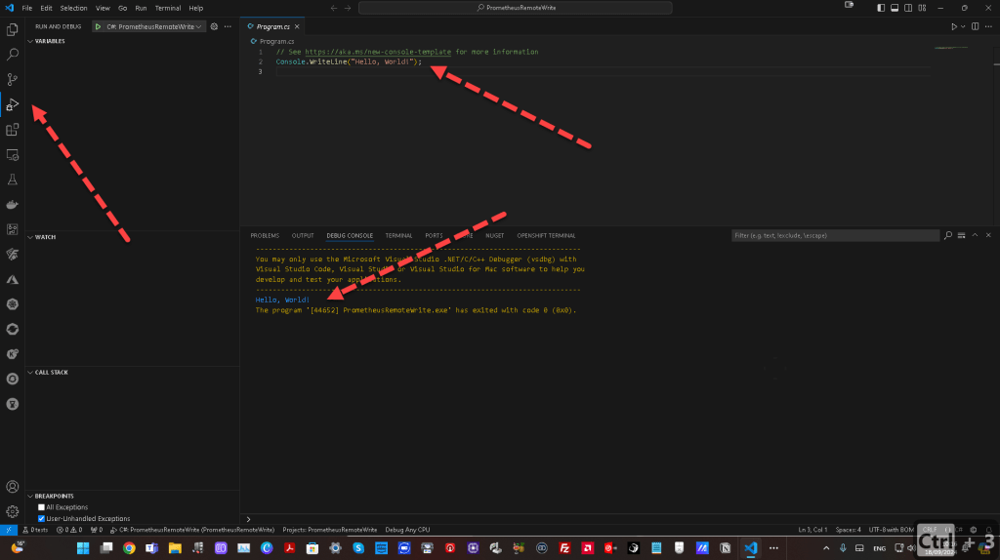
CODE2. Install Prometheus Client Libraries
For this project, you need the Prometheus client library to easily push metrics. Add the Prometheus NuGet package:
dotnet add package prometheus-net
This package provides us with necessary methods to expose and send metrics.
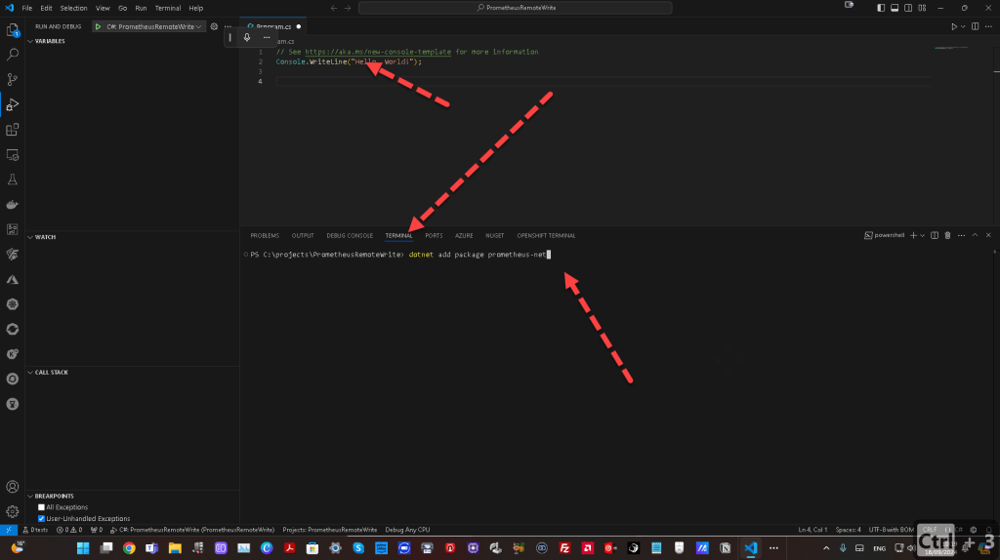
Fills up
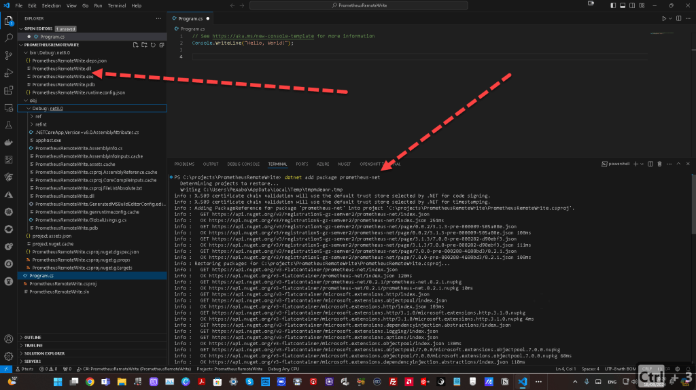
3. Code Your Metric Exporter
Now, we’ll modify the Program.cs file to expose some metrics and push them via Remote Write:
using Prometheus;
using System.Threading.Tasks;
class Program
{
static async Task Main(string[] args)
{
for (int i = 0; i < 10; i++)
{
counter.Inc();
await Task.Delay(1000); // Push every second
}
server.Start();
await Task.Delay(-1); // Keep the server running
}
}
In this example, we create a simple counter that increments every second and exposes it for Prometheus to scrape. 🚀
build and see the metrics coming in
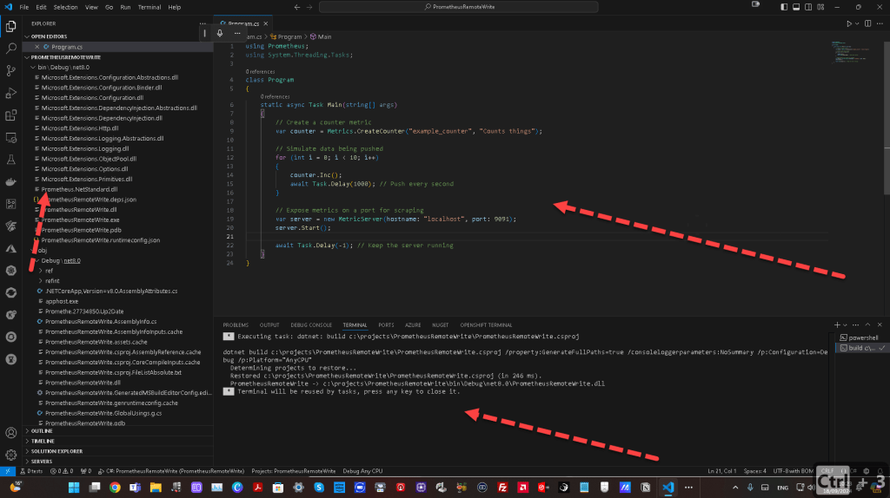
thanks to gpt the comments are written out as well
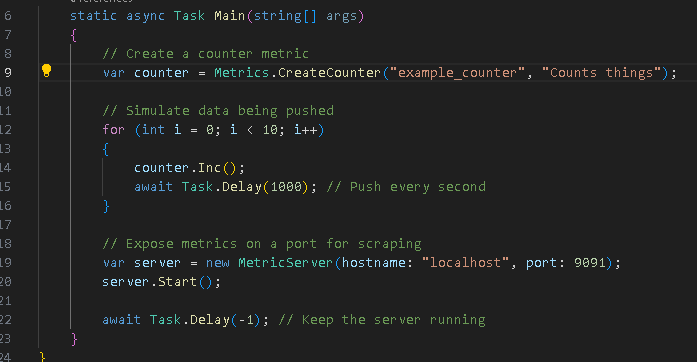
Run and see threads going online
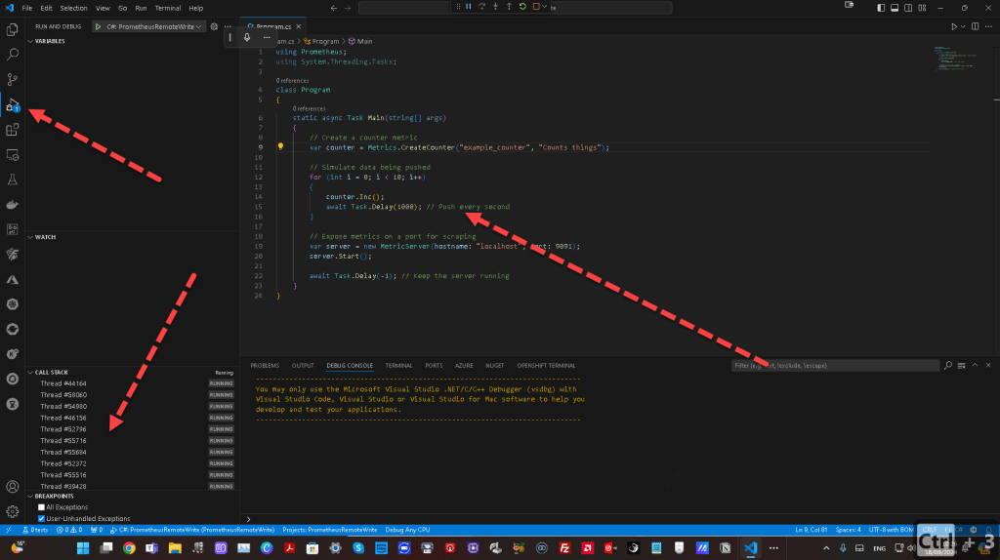
4. Set Up Remote Write in Prometheus
For Remote Write, you need to configure Prometheus to push metrics from one cluster to another. Here’s how to modify your prometheus.yml file:
remote_write:
- url: "http://
queue_config:
max_samples_per_send: 100
batch_send_deadline: 5s
This tells Prometheus to send all metrics to the remote cluster using the Remote Write API.
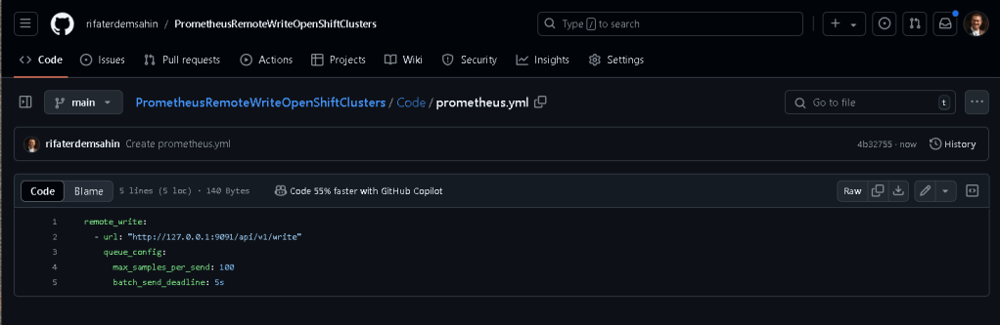
5. Deploy Your .NET Project to OpenShift
We now need to containerize the .NET application and deploy it to OpenShift:
- Create a Dockerfile:
FROM mcr.microsoft.com/dotnet/aspnet:5.0 AS base
WORKDIR /app
EXPOSE 80
FROM mcr.microsoft.com/dotnet/sdk:5.0 AS build
WORKDIR /src
COPY . .
RUN dotnet restore
RUN dotnet publish -c Release -o /app
FROM base AS final
WORKDIR /app
COPY --from=build /app .
ENTRYPOINT ["dotnet", "PrometheusRemoteWrite.dll"]
Jump between folders and that is fine
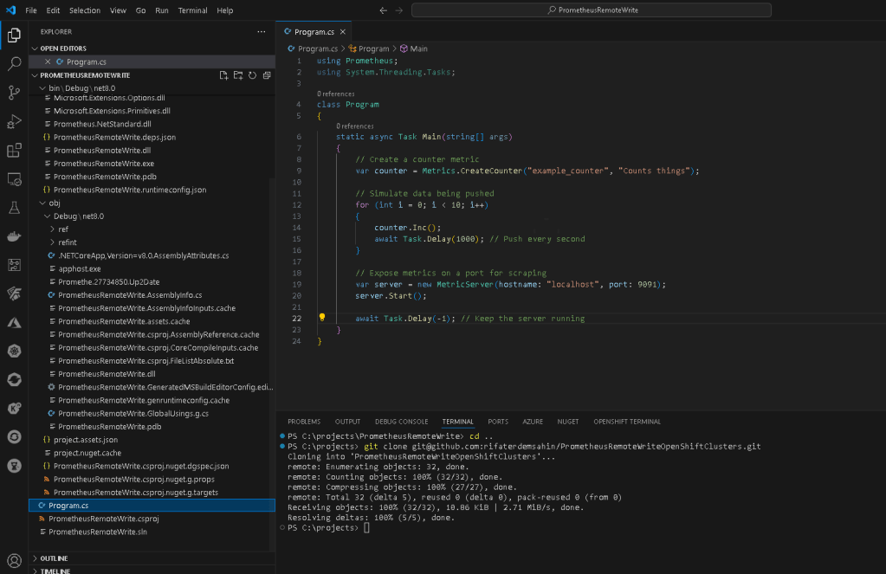
2 ways to make it work
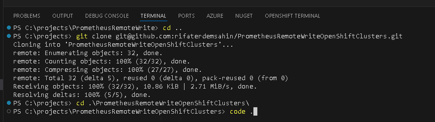
Your files are here
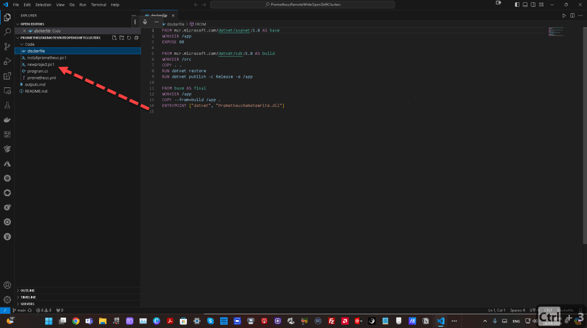
- Build the container and push it to OpenShift:
start engines
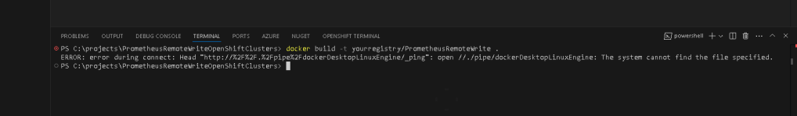
docker build -t yourregistry/PrometheusRemoteWrite .
docker push yourregistry/PrometheusRemoteWrite
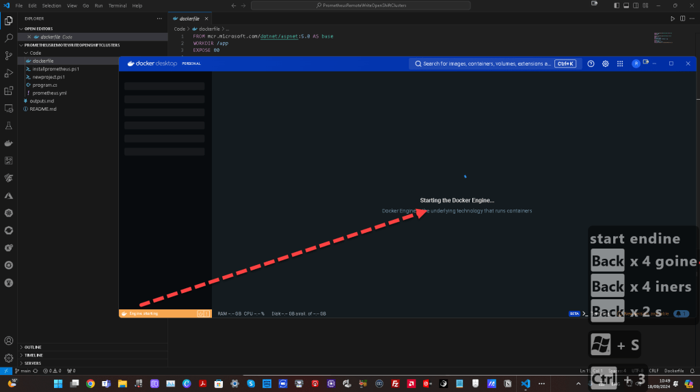
It looks like you're encountering a couple of issues when trying to build your Docker image. Here are some suggestions to help you resolve them:
-
Docker Connection Error: The first error indicates that Docker is having trouble connecting to the Docker Engine. Make sure that Docker Desktop is running. You might want to restart Docker Desktop or your computer to see if that resolves the connection issue.
-
Invalid Tag Error: The second error is about the image tag needing to be lowercase. Docker image names and tags must be in lowercase. Try changing your command to use a lowercase repository name. For example:
docker build -t rifaterdemsahin/prometheusremotewrite .
Once you've made those adjustments, try running the command again. Let me know if you need further assistance!
Go to Code
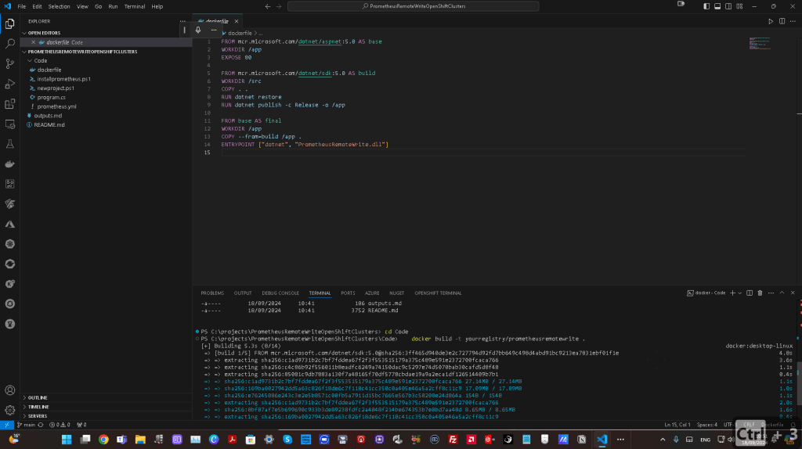
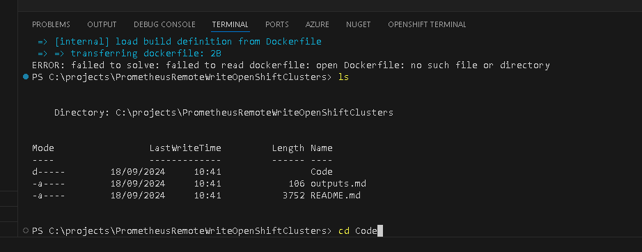
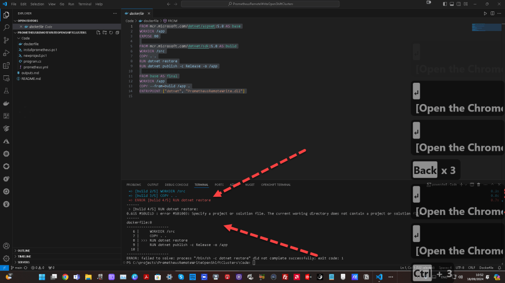
The error message indicates that the dotnet restore command can't find a project or solution file in the current directory. This typically happens when the Docker build context doesn't include the necessary files or when the project file is in a different location. Here are some steps to troubleshoot and resolve this issue:
-
Check Project Structure: Ensure that your project file (e.g.,
*.csproj) is in the correct directory. The Dockerfile assumes that your project file is in the root of the context being copied. -
Adjust COPY Command: If your project file is in a subdirectory, modify the
COPYcommand in your Dockerfile to specify the correct path. For example, if your project is in a folder calledsrc, you might need to change:
COPY src/*.csproj ./
COPY src/ ./
- Specify Project File: You can also specify the project file directly in the
dotnet restorecommand. For example:
RUN dotnet restore PrometheusRemoteWrite.csproj
- Build Context: Make sure you're running the
docker buildcommand from the correct context. The command should be run from the directory that contains the Dockerfile, or you should specify the correct context using the-foption:
docker build -f path/to/Dockerfile -t rifaterdemsahin/prometheusremotewrite .
After making these adjustments, try building the Docker image again. Let me know if you need further help!
Here's a revised version of your Dockerfile that addresses the issues related to the project file location and ensures that the necessary files are copied correctly:
Use the ASP.NET runtime image as the base
FROM mcr.microsoft.com/dotnet/aspnet:8.0 AS base
WORKDIR /app
EXPOSE 80
Use the .NET SDK image for building the application
FROM mcr.microsoft.com/dotnet/sdk:8.0 AS build
WORKDIR /src
Copy the project file and restore dependencies
COPY PrometheusRemoteWriteOpenShiftClusters/PrometheusRemoteWriteOpenShiftClusters.csproj PrometheusRemoteWriteOpenShiftClusters/
List the contents of the directory to see the copied files
RUN ls -la PrometheusRemoteWriteOpenShiftClusters/
RUN dotnet restore PrometheusRemoteWriteOpenShiftClusters/PrometheusRemoteWriteOpenShiftClusters.csproj
Copy the rest of the application code
COPY PrometheusRemoteWriteOpenShiftClusters/. PrometheusRemoteWriteOpenShiftClusters/
WORKDIR /src/PrometheusRemoteWriteOpenShiftClusters
Publish the application
RUN dotnet publish -c Release -o /app
Final stage to run the application
FROM base AS final
WORKDIR /app
COPY --from=build /app ./
ENTRYPOINT ["dotnet", "PrometheusRemoteWriteOpenShiftClusters.dll"]
Changes Made:
-
COPY Commands: Explicitly copy the project file before running
dotnet restoreto ensure the dependencies can be restored. -
Project Structure: The Dockerfile assumes that your project is located in a folder named
PrometheusRemoteWrite. Adjust this path according to your actual project structure if needed. -
Work Directory Changes: The working directory is set to the correct path before running the
dotnet publishcommand.
Make sure your project structure matches the paths used in the Dockerfile. If your project is structured differently, adjust the paths accordingly. Let me know if you need further modifications!
Commits are coming in
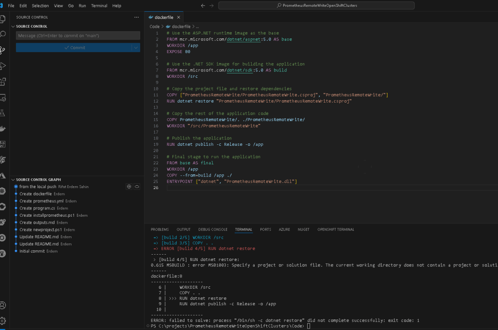
The error suggests that the Docker build process cannot find the specified directories or files. Here’s an updated version of the Dockerfile that should help resolve the issues. Make sure your project structure is correct before proceeding:
Updated Dockerfile
Use the ASP.NET runtime image as the base
FROM mcr.microsoft.com/dotnet/aspnet:8.0 AS base
WORKDIR /app
EXPOSE 80
Use the .NET SDK image for building the application
FROM mcr.microsoft.com/dotnet/sdk:8.0 AS build
WORKDIR /src
Copy the project file and restore dependencies
COPY PrometheusRemoteWriteOpenShiftClusters/PrometheusRemoteWriteOpenShiftClusters.csproj PrometheusRemoteWriteOpenShiftClusters/
List the contents of the directory to see the copied files
RUN ls -la PrometheusRemoteWriteOpenShiftClusters/
RUN dotnet restore PrometheusRemoteWriteOpenShiftClusters/PrometheusRemoteWriteOpenShiftClusters.csproj
Copy the rest of the application code
COPY PrometheusRemoteWriteOpenShiftClusters/. PrometheusRemoteWriteOpenShiftClusters/
WORKDIR /src/PrometheusRemoteWriteOpenShiftClusters
Publish the application
RUN dotnet publish -c Release -o /app
Final stage to run the application
FROM base AS final
WORKDIR /app
COPY --from=build /app ./
ENTRYPOINT ["dotnet", "PrometheusRemoteWriteOpenShiftClusters.dll"]
Key Points to Check:
- Project Structure: Ensure that the directory
PrometheusRemoteWriteexists at the same level as your Dockerfile and contains thePrometheusRemoteWrite.csprojfile and all necessary code files.
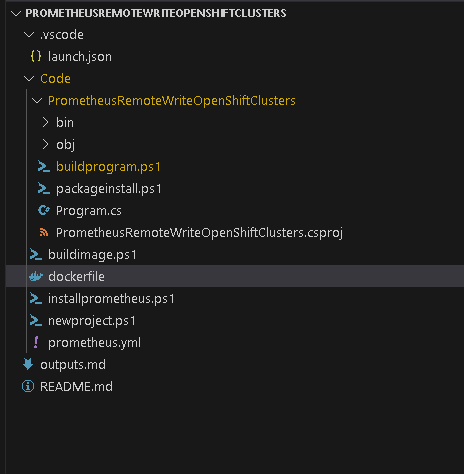
-
Correct Paths: Make sure the paths in the
COPYcommands correctly reflect your project's structure. Adjust the paths if your project files are located differently. -
Build Context: Run the
docker buildcommand from theCodedirectory where your Dockerfile is located, like this:
docker build -t rifaterdemsahin/prometheusremotewriteopenshiftclusters .
After making these adjustments, try building the Docker image again. Let me know if you encounter any more issues!
Add the names to console and part that needs to work
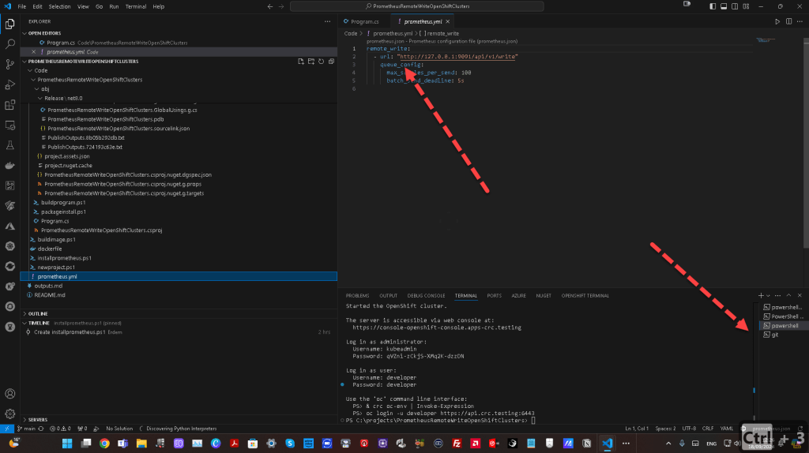
The error indicates that the Docker build process can't find the specified PrometheusRemoteWrite.csproj file. This usually means that the file path in the COPY command doesn't match your actual directory structure. Let's troubleshoot this step by step:
-
Verify Directory Structure: Make sure your project directory structure looks something like this:
-
Adjust the Dockerfile: If your project structure is correct, make sure your
COPYcommands reflect that. Here’s a modified Dockerfile assuming the structure is as above:
Use the ASP.NET runtime image as the base
FROM mcr.microsoft.com/dotnet/aspnet:8.0 AS base
WORKDIR /app
EXPOSE 80
Use the .NET SDK image for building the application
FROM mcr.microsoft.com/dotnet/sdk:8.0 AS build
WORKDIR /src
Copy the project file and restore dependencies
COPY PrometheusRemoteWriteOpenShiftClusters/PrometheusRemoteWriteOpenShiftClusters.csproj PrometheusRemoteWriteOpenShiftClusters/
List the contents of the directory to see the copied files
RUN ls -la PrometheusRemoteWriteOpenShiftClusters/
RUN dotnet restore PrometheusRemoteWriteOpenShiftClusters/PrometheusRemoteWriteOpenShiftClusters.csproj
Copy the rest of the application code
COPY PrometheusRemoteWriteOpenShiftClusters/. PrometheusRemoteWriteOpenShiftClusters/
WORKDIR /src/PrometheusRemoteWriteOpenShiftClusters
Publish the application
RUN dotnet publish -c Release -o /app
Final stage to run the application
FROM base AS final
WORKDIR /app
COPY --from=build /app ./
ENTRYPOINT ["dotnet", "PrometheusRemoteWriteOpenShiftClusters.dll"]
- Run Docker Build Command: Ensure you are in the correct directory where your Dockerfile is located when running the build command:
cd C:\projects\PrometheusRemoteWriteOpenShiftClusters\Code
docker build -t rifaterdemsahin/prometheusremotewrite .
- Check for Typos: Double-check for any typos in your file names or paths.
After making sure everything is correct, try building the Docker image again. If the issue persists, please provide the exact structure of your PrometheusRemoteWrite directory, and I can help you further!
my miss spellings and read the gpt
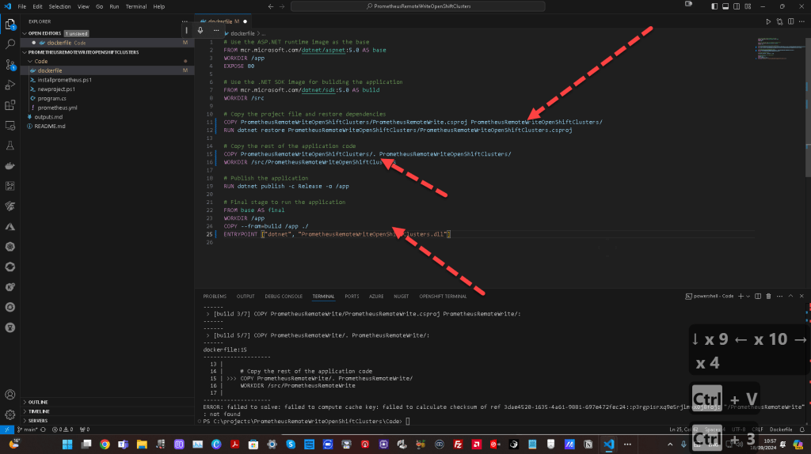
It seems there might be some confusion with the file paths in your Dockerfile. Based on the error messages, it looks like the paths might not be correctly set relative to your build context. Let's adjust the Dockerfile and clarify how to structure the project for successful building.
Revised Dockerfile
Here’s an updated version that assumes your PrometheusRemoteWrite.csproj file is inside the PrometheusRemoteWriteOpenShiftClusters directory:
Use the ASP.NET runtime image as the base
FROM mcr.microsoft.com/dotnet/aspnet:8.0 AS base
WORKDIR /app
EXPOSE 80
Use the .NET SDK image for building the application
FROM mcr.microsoft.com/dotnet/sdk:8.0 AS build
WORKDIR /src
Copy the project file and restore dependencies
COPY PrometheusRemoteWriteOpenShiftClusters/PrometheusRemoteWriteOpenShiftClusters.csproj PrometheusRemoteWriteOpenShiftClusters/
List the contents of the directory to see the copied files
RUN ls -la PrometheusRemoteWriteOpenShiftClusters/
RUN dotnet restore PrometheusRemoteWriteOpenShiftClusters/PrometheusRemoteWriteOpenShiftClusters.csproj
Copy the rest of the application code
COPY PrometheusRemoteWriteOpenShiftClusters/. PrometheusRemoteWriteOpenShiftClusters/
WORKDIR /src/PrometheusRemoteWriteOpenShiftClusters
Publish the application
RUN dotnet publish -c Release -o /app
Final stage to run the application
FROM base AS final
WORKDIR /app
COPY --from=build /app ./
ENTRYPOINT ["dotnet", "PrometheusRemoteWriteOpenShiftClusters.dll"]
Key Adjustments
-
COPY Commands: Ensure that the
COPYcommands reflect the correct paths. The project file is copied to a subdirectory namedPrometheusRemoteWrite. -
Work Directory: Set the working directory correctly after copying the files.
-
Entry Point: The
ENTRYPOINTcommand uses the correct DLL name based on your project file.
Steps to Build
-
Check Directory Structure: Make sure your project files are structured like this:
-
Run the Build Command: Navigate to the directory containing the Dockerfile and run:
docker build -t rifaterdemsahin/prometheusremotewrite .
This should resolve the issues you’re facing. If there are still errors, please double-check the file names and directory structure, or let me know the exact structure, and we can troubleshoot further!
Use OpenShift to deploy the container via oc commands:
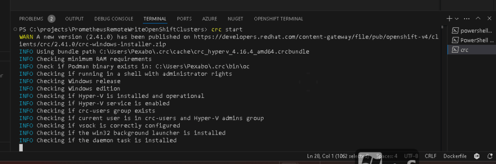
oc new-app --docker-image=rifaterdemsahin/PrometheusRemoteWriteOpenShiftClusters
Based on your folder structure, it looks like your Dockerfile and other relevant files (like program.cs and prometheus.yml) are in the Code directory, but you don't seem to have a project file (like *.csproj) present.
To build a .NET application, you'll need a project file. Here's how you can proceed:
Step 1: Create a Project File
If you haven't created a project yet, you can do so by running the following command in your terminal from the Code directory:
dotnet new console -n PrometheusRemoteWriteOpenShiftClusters
This will create a new folder named PrometheusRemoteWrite containing a project file (PrometheusRemoteWrite.csproj) and a Program.cs file.
Restart
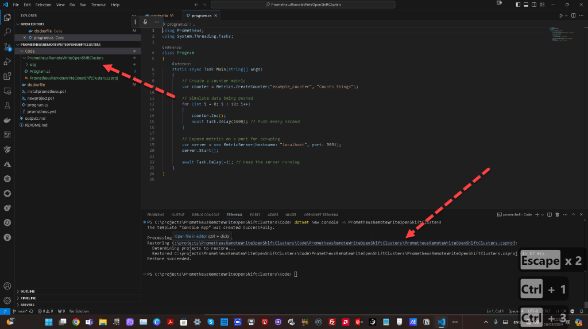
Step 2: Move Your Existing Code
If you want to use your existing program.cs file, move it into the newly created PrometheusRemoteWrite directory:
- Move the
program.csfile:
Move-Item program.cs PrometheusRemoteWriteOpenShiftClusters/
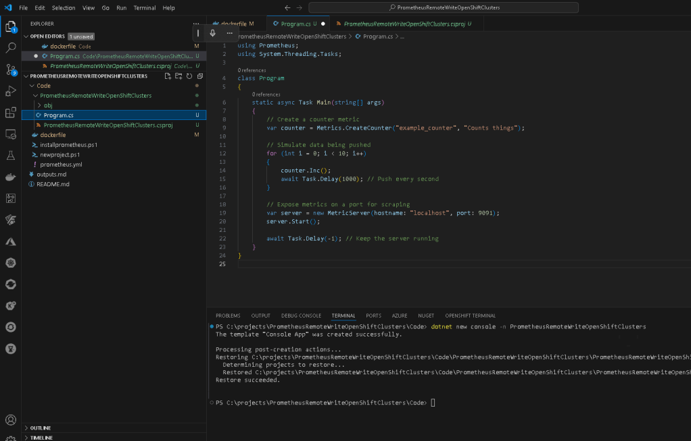
Manual add
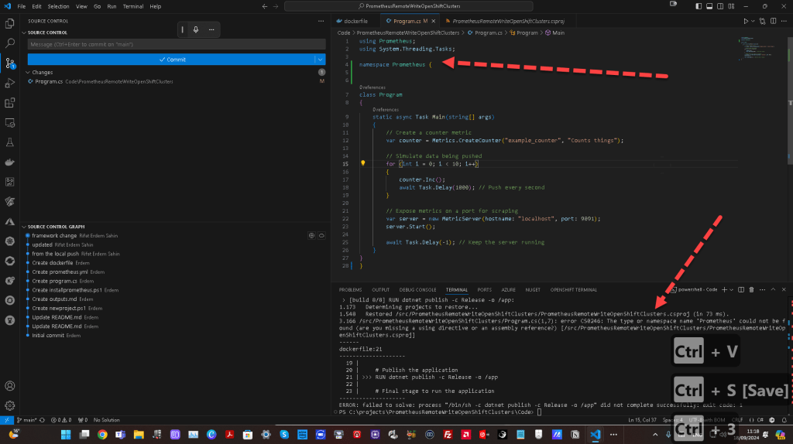
It looks like you're running into issues with missing references in your .NET project related to Prometheus. The errors indicate that the Metrics class and MetricServer are not being recognized. Here are some steps to troubleshoot and resolve the issue:
- Ensure the Prometheus NuGet Package is Installed: Make sure you have the Prometheus.NET package installed. You can do this by running the following command in your project directory:
dotnet add package Prometheus
Time Elapsed 00:00:01.05
PS C:\projects\PrometheusRemoteWriteOpenShiftClusters\Code\PrometheusRemoteWriteOpenShiftClusters> dotnet add package Prometheus
Determining projects to restore...
Writing C:\Users\Pexabo\AppData\Local\Temp\tmpqyh0il.tmp
info : X.509 certificate chain validation will use the default trust store selected by .NET for code signing.
info : X.509 certificate chain validation will use the default trust store selected by .NET for timestamping.
info : Adding PackageReference for package 'Prometheus' into project 'C:\projects\PrometheusRemoteWriteOpenShiftClusters\Code\PrometheusRemoteWriteOpenShiftClusters\PrometheusRemoteWriteOpenShiftClusters.csproj'.
info : GET https://api.nuget.org/v3/registration5-gz-semver2/prometheus/index.json
info : OK https://api.nuget.org/v3/registration5-gz-semver2/prometheus/index.json 288ms
info : CACHE https://api.nuget.org/v3/registration5-gz-semver2/prometheus/index.json
error: There are no versions available for the package 'Prometheus'.
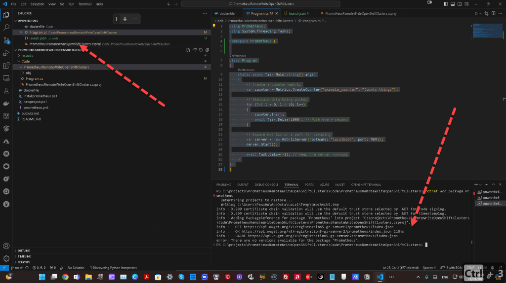
- Check Using Directives: Make sure your using directives at the top of your
Program.csfile include:
using Prometheus;
- Verify Project File: Check your
.csprojfile to ensure that the package reference for Prometheus is present. It should look something like this:
Your project file looks mostly correct, but you'll need to replace x.x.x with the actual version of the Prometheus package you want to use. You can find the latest version on NuGet.org.
Here's an updated example:
2 versions of it
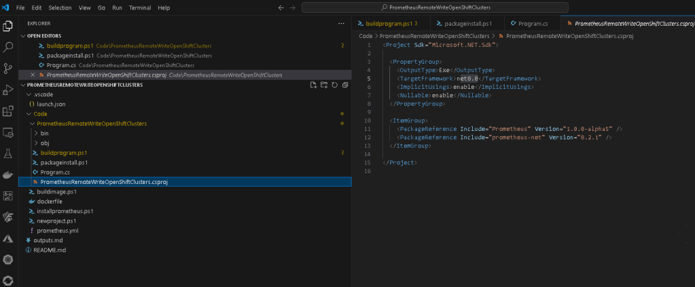
After updating the version, run the following commands to restore packages and publish your project:
dotnet restore
dotnet publish -c Release -o /app
Packaged libraries
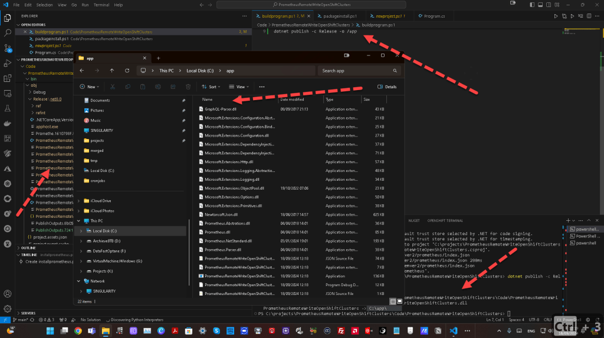
If you continue to see errors, please let me know!
Replace x.x.x with the actual version you want to use.
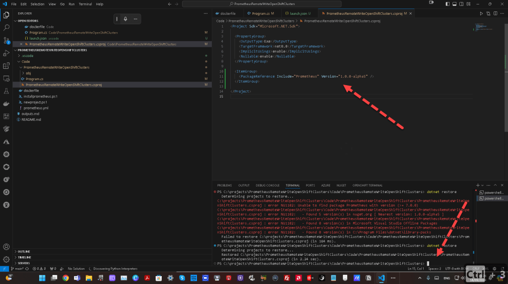
The errors you're encountering indicate that the Metrics and MetricServer classes from the Prometheus package are still not recognized. This may be due to a couple of reasons:
- Check for Correct Namespace: Ensure that you're using the correct namespace. Based on the version you have, your using directive should be:
using Prometheus;
Ensure it's at the top of your Program.cs file.
-
Inspect the Installed Version: Since you're using an alpha version, it's possible that the APIs or classes might differ from the stable releases. Check the documentation or source code of
Prometheusto confirm thatMetricsandMetricServerexist in1.0.0-alpha5. -
Verify Dependencies: Sometimes, alpha versions can have different dependencies or issues. Consider switching to the latest stable version if one exists. As of now, it seems
1.0.0-alpha5is the only one available, so checking their GitHub repository for more details could help. -
Clean and Rebuild: Try cleaning your project and then rebuilding:
dotnet clean
dotnet build
- Check for Typos: Ensure there are no typos in the class names and that you're using them correctly in your code.
If you've checked all of these and are still having issues, you might want to consider looking for a different library or an updated stable version of Prometheus if it becomes available. Let me know how it goes!
The errors you're encountering indicate that the Metrics and MetricServer classes from the Prometheus package are still not recognized. This may be due to a couple of reasons:
- Check for Correct Namespace: Ensure that you're using the correct namespace. Based on the version you have, your using directive should be:
using Prometheus;
Ensure it's at the top of your Program.cs file.
-
Inspect the Installed Version: Since you're using an alpha version, it's possible that the APIs or classes might differ from the stable releases. Check the documentation or source code of
Prometheusto confirm thatMetricsandMetricServerexist in1.0.0-alpha5. -
Verify Dependencies: Sometimes, alpha versions can have different dependencies or issues. Consider switching to the latest stable version if one exists. As of now, it seems
1.0.0-alpha5is the only one available, so checking their GitHub repository for more details could help. -
Clean and Rebuild: Try cleaning your project and then rebuilding:
dotnet clean
dotnet build
- Check for Typos: Ensure there are no typos in the class names and that you're using them correctly in your code.
If you've checked all of these and are still having issues, you might want to consider looking for a different library or an updated stable version of Prometheus if it becomes available. Let me know how it goes!
It says not found even when you can build with vs code...so build script is important
Different debug options > https://code.visualstudio.com/docs/csharp/debugging
To create a solution (.sln) file from a .csproj project file in .NET, you can use the following steps:
Method 1: Using Visual Studio
-
Open Visual Studio.
-
Go to File > Open > Project/Solution.
-
Navigate to your
.csprojfile and open it. -
Once the project is loaded, go to File > Save As Solution.
-
This will generate a
.sln(solution) file that groups your.csprojand any future projects you want to add.
Method 2: Using Command Line (.NET CLI)
-
Open a terminal or command prompt.
-
Navigate to the directory containing your
.csprojfile. -
Run the following command to create a new solution:
dotnet new sln
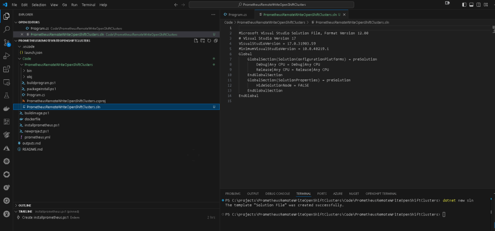
- Once the solution file is created, add your project to it using:
dotnet sln add PrometheusRemoteWriteOpenShiftClusters.csproj
Project now added to the solution
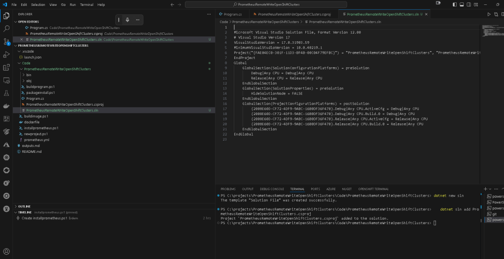
- The
.slnfile will now contain your project, and you can open it in Visual Studio or other IDEs.
This will create a solution file from your existing project. Let me know if you need further assistance!
run and debug on server does not work
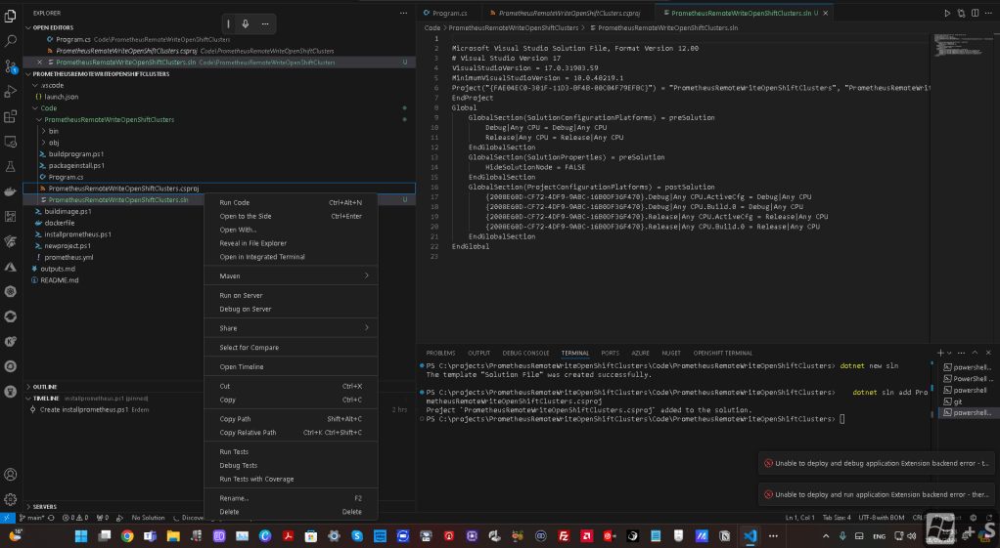
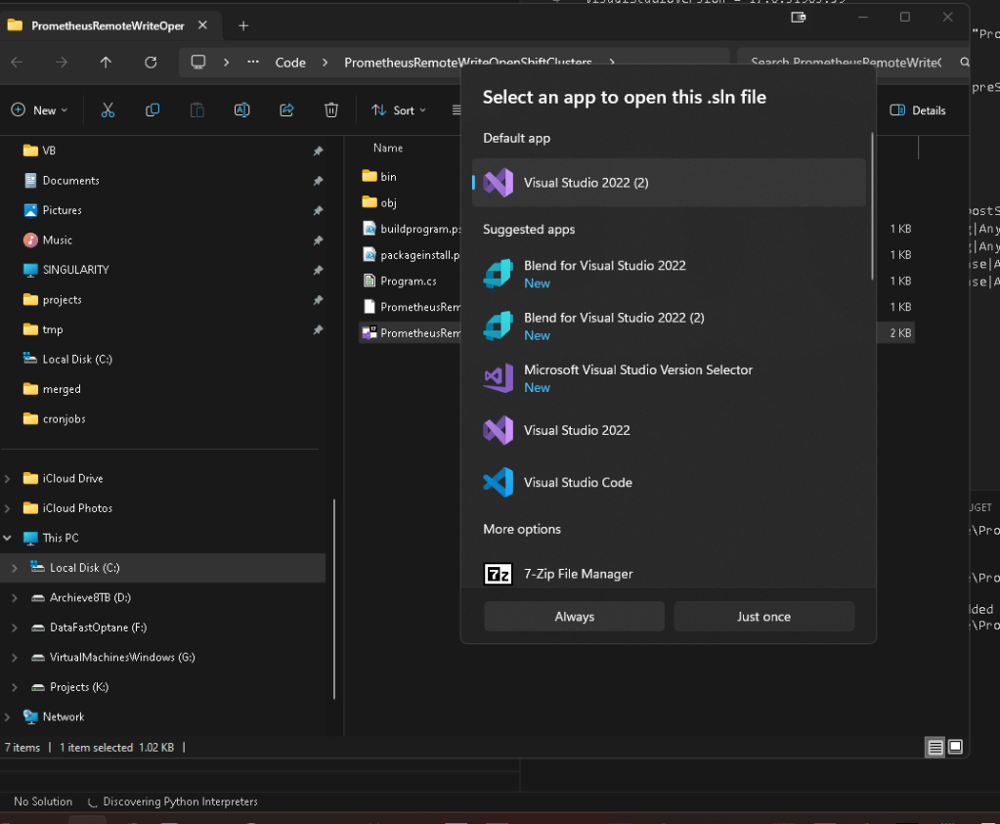
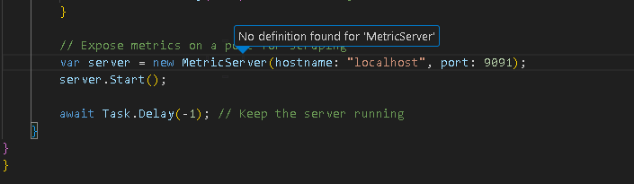
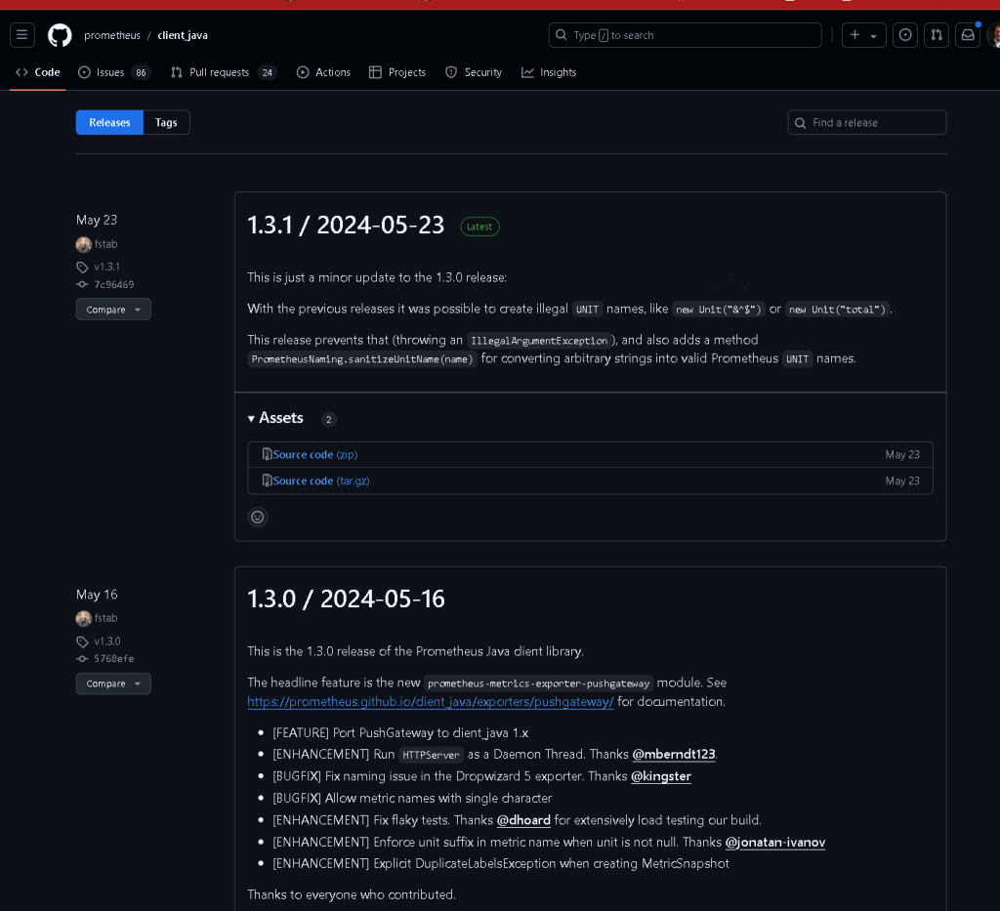
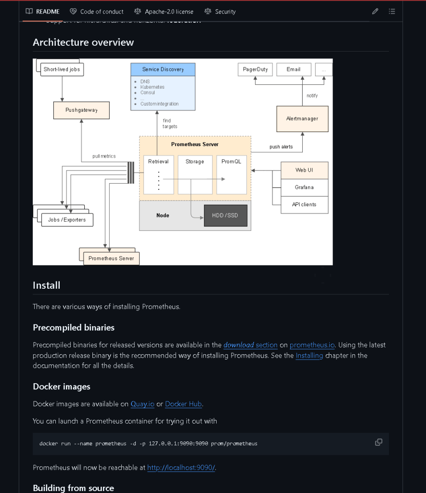
Runner program
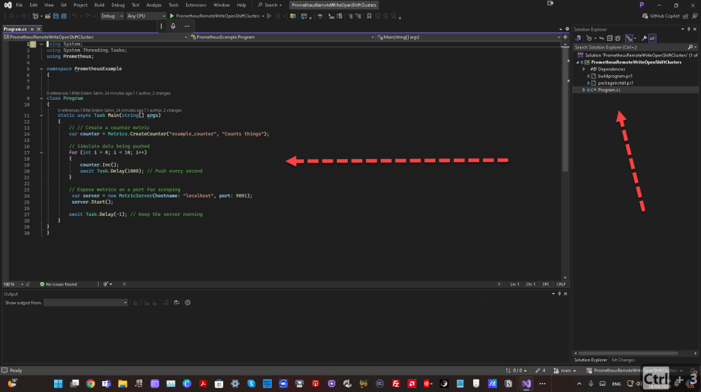
turn off and build it
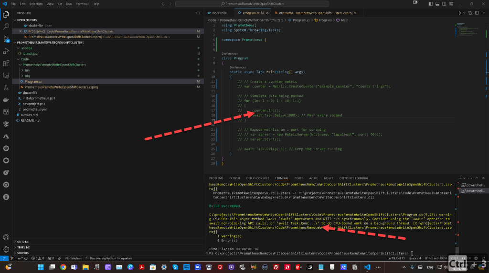
- Rebuild the Project: After ensuring the package is correctly referenced, try restoring the packages and rebuilding the project:
Run and see in vs2022
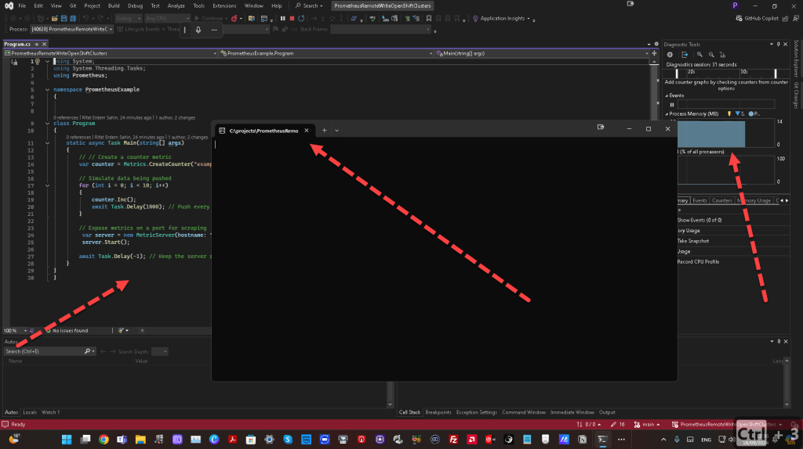
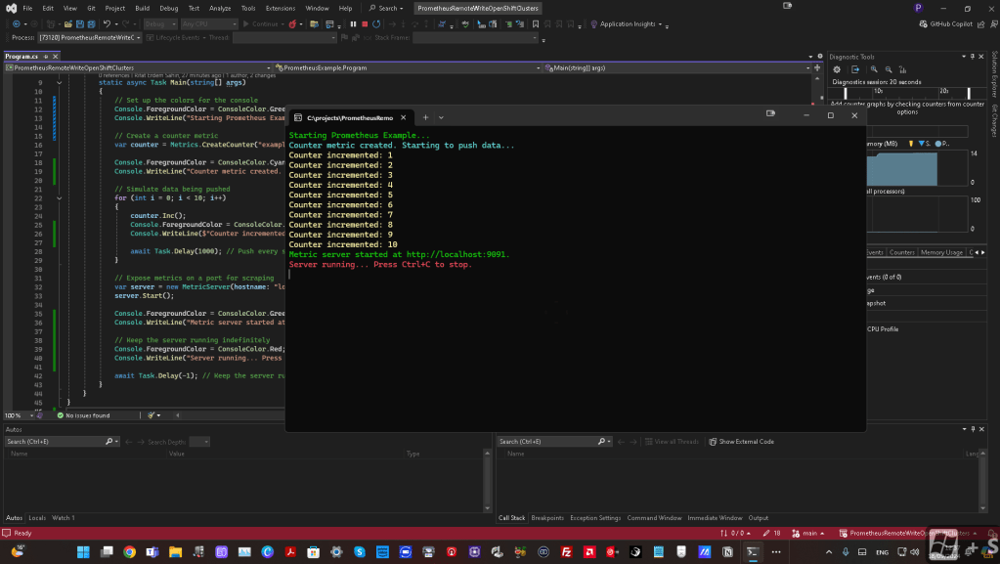
Have a structure to build it
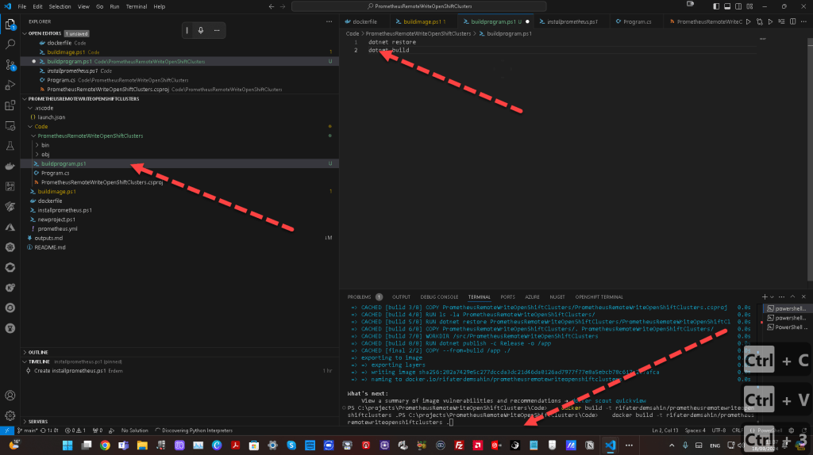
dotnet restore
dotnet build
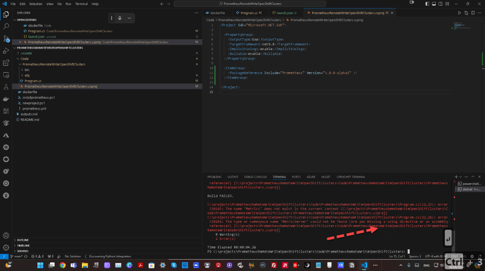
- Check Target Framework: Make sure your project is targeting a compatible .NET version. Prometheus.NET typically supports .NET Core 2.1 and above.
Framework 8.0
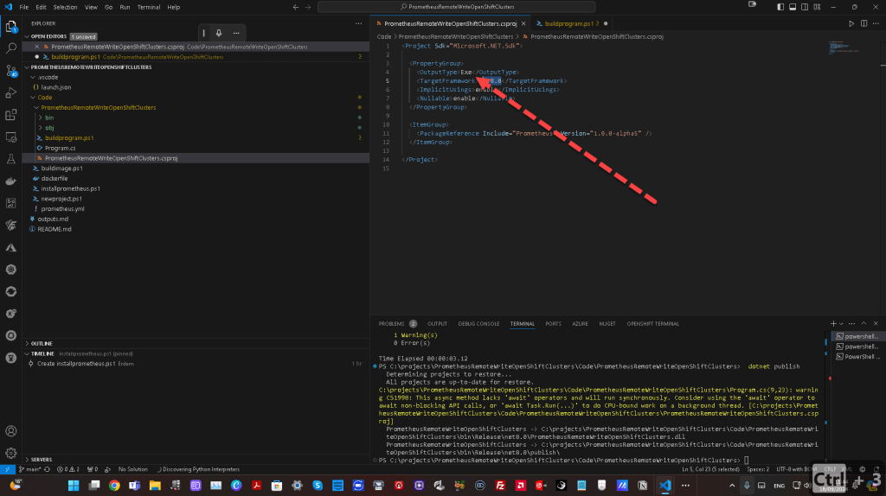
- Inspect for Other Errors: If there are still errors, ensure there are no conflicting namespaces or classes within your project that might cause confusion.
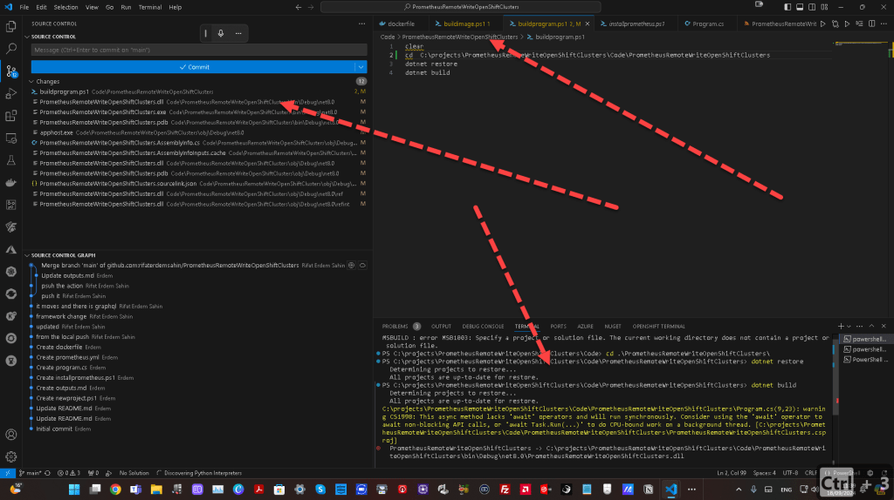
After making these changes, try running the dotnet publish command again. Let me know if you need further assistance!
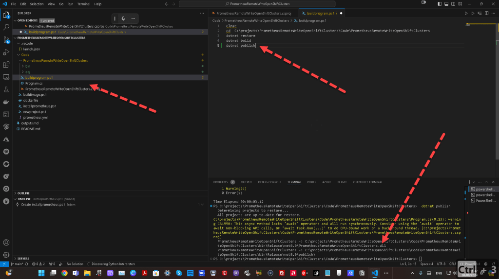
You can also move any other files you need, like prometheus.yml, into that directory if necessary.
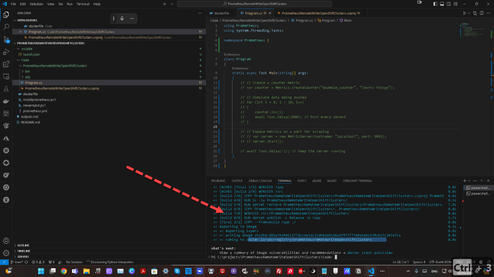
GraphQL
Step 3: Update the Dockerfile
Assuming your project file is now in the PrometheusRemoteWrite directory, here's the updated Dockerfile:
Use the ASP.NET runtime image as the base
FROM mcr.microsoft.com/dotnet/aspnet:8.0 AS base
WORKDIR /app
EXPOSE 80
Use the .NET SDK image for building the application
FROM mcr.microsoft.com/dotnet/sdk:8.0 AS build
WORKDIR /src
Copy the project file and restore dependencies
COPY PrometheusRemoteWriteOpenShiftClusters/PrometheusRemoteWriteOpenShiftClusters.csproj PrometheusRemoteWriteOpenShiftClusters/
List the contents of the directory to see the copied files
RUN ls -la PrometheusRemoteWriteOpenShiftClusters/
RUN dotnet restore PrometheusRemoteWriteOpenShiftClusters/PrometheusRemoteWriteOpenShiftClusters.csproj
Copy the rest of the application code
COPY PrometheusRemoteWriteOpenShiftClusters/. PrometheusRemoteWriteOpenShiftClusters/
WORKDIR /src/PrometheusRemoteWriteOpenShiftClusters
Publish the application
RUN dotnet publish -c Release -o /app
Final stage to run the application
FROM base AS final
WORKDIR /app
COPY --from=build /app ./
ENTRYPOINT ["dotnet", "PrometheusRemoteWriteOpenShiftClusters.dll"]
Step 4: Build the Docker Image
Finally, from the Code directory, run:
docker build -t yourregistry/prometheusremotewrite .
Let me know if you need further assistance!
📸 Adding Pauses and Screenshots
Now, let’s integrate some pauses in your coding process for debugging or screenshots.
- When incrementing the counter, add a pause for taking a screenshot:
await Task.Delay(10000); // 10 second pause
- Take a screenshot of the Prometheus UI once it starts scraping metrics.
💡 Final Thoughts
This project showcases how easy it is to set up a relationship similar to Thanos in Prometheus and implement Prometheus Remote Write to move data across OpenShift clusters using a .NET project.
🚀 Want to keep improving your monitoring system? Keep an eye on new features in Prometheus and Thanos for distributed metrics and scaling!
🔗 Connect with me:
-
💼 LinkedIn: https://www.linkedin.com/in/rifaterdemsahin/
-
🐦 Twitter: https://x.com/rifaterdemsahin
-
🎥 YouTube: https://www.youtube.com/@RifatErdemSahin
-
💻 GitHub: https://github.com/rifaterdemsahin
Let me know if you want any other technical deep dives! 😄
Regular Cleanup
fix image name
Add on double sides
Reference
https://github.com/prometheus
Open One and Retry to build
why are you failing
gpt collect logs and reask >
It looks like you're encountering two issues in your C# code for the Prometheus Remote Write project. Let's break them down:
- Warning CS1998: This warning indicates that the
Mainmethod is defined asasync, but it doesn't use anyawaitstatements. If you don't have any asynchronous operations inMain, you can change it to a synchronous method:
static void Main(string[] args)
{
}
If you plan to keep it asynchronous for future use, you could add an await on a Task or use Task.Run() for CPU-bound operations.
- Error CS0103: This error states that the name
Metricsdoes not exist in the current context. This usually means that you haven't included the appropriate namespace or the necessary NuGet package. Make sure you have the Prometheus-net NuGet package installed in your project. You can install it via the Package Manager Console with the following command:
Install-Package prometheus-net
After installing, ensure you have the correct using directive at the top of your file:
using Prometheus;
Once you've addressed these issues, your code should compile without errors. Let me know if you need further assistance!
It seems that the Install-Package command couldn't find the prometheus-net package. This could be due to a few reasons, such as package sources not being configured correctly. Here’s how to troubleshoot and install the package:
- Check Package Sources: Run the following command to list the available package sources:
Get-PackageSource
Ensure that you have the NuGet package source listed. If it's missing, you can add it with:
Register-PackageSource -Name nuget.org -Provider NuGet -Location https://api.nuget.org/v3/index.json
- Install the Package: After confirming that the NuGet source is available, try to install the package again:
Install-Package prometheus-net
I used this one
dotnet add package prometheus-net
- Use the .NET CLI (if applicable): If you're still having issues with PowerShell, you can try using the .NET CLI instead. Run this command in your project directory:
dotnet add package prometheus-net
After installing the package, try rebuilding your project to see if the issues are resolved. Let me know how it goes!v
opened up all and build it
rebuild and push the latest version to the docker
Outline and Summary Again and get the gap
6. Deploy Your Container to OpenShift
- Use
occommands to deploy the container:bashCopy code
oc new-app --docker-image=rifaterdemsahin/prometheusremotewriteopenshiftclusters
update the action
And add the breadcrumbs on what you are trying to do
https://github.com/rifaterdemsahin/PrometheusRemoteWriteOpenShiftClusters/blob/main/outputs.md
docker update coming on
update desktop and the crc and restart >> workstation slowed down
Imported from rifaterdemsahin.com · 2025